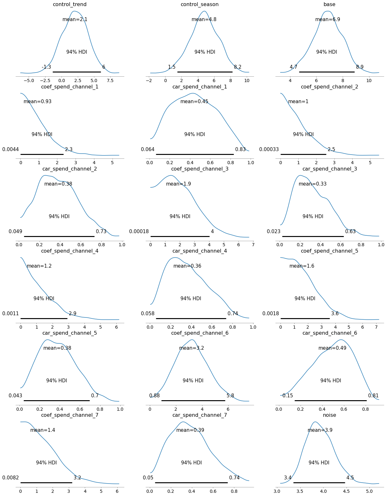
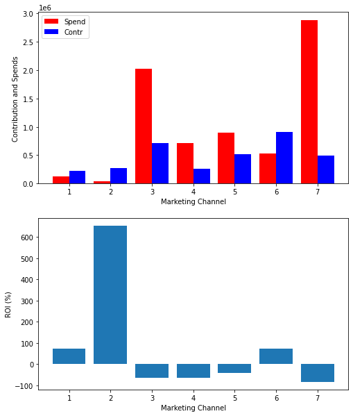

The Problem Statement and the proposed Bayesian MMM solution
Consider a company, which runs an online shop, and advertises on seven different paid channels (TV, radio, billboards, Google Ads, etc). Based on weekly data on weekly advertisement costs and revenue available for 2 years, the company would like to understand how effective different channels are. One has to take into account that marketing actions have usually not an immediate effect, ads and campaigns in one week influence usually sales in the coming weeks. So different channels can be expected to target different audiences at different times and for different durations, and hence will have lagged effects on revenue.
For this problem, I used a Bayesian Media Mix Modelling approach. MMM can be perfomed with a simpler linear regression approach, however with a bayesian approach, we can find more robust solutions, and estimate confidence intervals. For this work, I took inspiration and used code from the following sources:
Adding the detected trend and seasonality signals back to the data table:
prophet_columns = [col for col in prophet_predict.columns if (col.endswith("upper") ==False) & (col.endswith("lower") ==False)]final_data = data_wdates.copy()final_data["trend"] = prophet_predict["trend"]final_data["season"] = prophet_predict["yearly"]
The final feature (X) and target (y) data:
X = final_data.drop(columns=['revenue', 'start_of_week'])y = final_data['revenue']
The Model
Carryover (adstock)
For modelling carryover, following Jin et al. 2017, we use an adstock function of the form:
where, \(w_m\) describes the weight of the effect on each time step \(l\), that lasts for \(L\) time steps (which we here prescribe to be 13 time steps, i.e., weeks, which is a good approximation for infinity according to Jin et al. 2017), and \(\alpha_m\) is the decay rate for the channel \(m\).
def carryover(x, strength, length=13): w = tt.as_tensor_variable( [tt.power(strength, i) for i inrange(length)] ) x_lags = tt.stack( [tt.concatenate([tt.zeros(i),x[:x.shape[0]-i]]) for i inrange(length)] )return tt.dot(w, x_lags)
The additive model
Next, we build a model that consists of delayed media channels and control variables:
where, \(\epsilon\) and \(\tau\) represent noise and baseline revenue, \(z_{t,c}\) and \(\gamma\) represent the control variable \(c\) and their effects, and \(x^*_{t,m}\) and \(\beta_m\) represent the (adstocked) media spending \(m\) and their effects, respectively.
Note that here for simplicity, we assume no shape effects (i.e., no saturation). We further assume that marketing contributions can only be positive, which can be achieved by drawing the contribution coefficient from a half-normal distribution.
control_variables = ["trend", "season"]delay_channels = [f'spend_channel_{i}'for i inrange(1,8)]transform_variables = control_variables+delay_channelsy_transformed=y/10000#rescale target variableX_transformed = X.copy() #Min-max scale the featuresnumerical_encoder_dict = {}for feature in transform_variables: scaler = MinMaxScaler() original = final_data[feature].values.reshape(-1, 1) transformed = scaler.fit_transform(original) X_transformed[feature] = transformed numerical_encoder_dict[feature] = scalerwith pm3.Model() as mmm1: channel_contributions = []for channel in delay_channels:print(f"Delay channels: Adding {channel}")#Force the channel coefficients to be normal: coef = pm3.HalfNormal(f'coef_{channel}', sigma =2) car = pm3.Beta(f'car_{channel}', alpha=2, beta=2) channel_data = X_transformed[channel].values channel_contribution = pm3.Deterministic(f'contribution_{channel}', coef * carryover( channel_data, car), ) channel_contributions.append(channel_contribution) control_contributions = []for control_var in control_variables:print(f"Control Variables: Adding {control_var}") x = X_transformed[control_var].values control_beta = pm3.Normal(f"control_{control_var}", sigma =3) control_x = control_beta * x control_contributions.append(control_x) base = pm3.Normal("base", np.mean(y_transformed.values), sigma =2)#base = pm3.Exponential('base', lam=0.01) noise = pm3.Exponential('noise', lam=0.1) sales = pm3.Normal('sales', mu= base +sum(control_contributions) +sum(channel_contributions), sigma=noise, observed=y_transformed )
We can check whether the model estimates based on priors more or less make sense, as can be judged from a rough alignment of the corresponding estimates with the observations.
with mmm1: prior_pred = pm3.sample_prior_predictive()prior_names = [prior_name for prior_name inlist(prior_pred.keys()) if (prior_name.endswith("logodds__") ==False) & (prior_name.endswith("_log__") ==False)]fig, ax = plt.subplots(figsize = (20, 8))_ = ax.plot(prior_pred["sales"].T, color ="0.5", alpha =0.1)_ = ax.plot(y_transformed.values, color ="red")
Check the prior distributions:
#plots priors using the random variablesdef plot_priors(variables, prior_dictionary =None):ifisinstance(variables[0], pm3.model.TransformedRV) ==Falseand prior_dictionary isNone:raiseException("prior dictionary should be provided. It can be generated by sample_prior_predictive") cols =7 rows =int(math.ceil(len(variables)/cols)) fig, ax = plt.subplots(rows, cols, figsize=(15, 3*rows)) ax = np.reshape(ax, (-1, cols))for i inrange(rows):for j inrange(cols): vi = i*cols + jif vi <len(variables): var = variables[vi]ifisinstance(var, pm3.model.TransformedRV): sns.histplot(var.random(size=10000).flatten(), kde=True, ax=ax[i, j])#p.set_axis_labels(var.name) ax[i, j].set_title(var.name)else: prior = prior_dictionary[var] sns.histplot(prior, kde=True, ax = ax[i, j]) ax[i, j].set_title(var) plt.tight_layout()adstock_priors = [p for p in prior_names if p.startswith("car")]plot_priors(adstock_priors, prior_pred)print(f"carryover priors: {len(adstock_priors)}")# alpha_priors = [p for p in prior_names if p.startswith("sat")]# plot_priors(alpha_priors, prior_pred)# print(f"sat priors: {len(alpha_priors)}")media_coef_priors = [p for p in prior_names if p.startswith("coef")]plot_priors(media_coef_priors, prior_pred)print(f"coef priors: {len(media_coef_priors)}")control_coef_priors = [p for p in prior_names if p.startswith("control_")] + ["base"]plot_priors(control_coef_priors, prior_pred)print(f"control coef priors: {len(control_coef_priors)}")#plot_priors(["sigma"], prior_pred)print(f"sigma prior: 1")
array([[<matplotlib.axes._subplots.AxesSubplot object at 0x7fefc4e301c0>,
<matplotlib.axes._subplots.AxesSubplot object at 0x7fefc24cea00>,
<matplotlib.axes._subplots.AxesSubplot object at 0x7fefc24fb520>],
[<matplotlib.axes._subplots.AxesSubplot object at 0x7fefc245b760>,
<matplotlib.axes._subplots.AxesSubplot object at 0x7fefc23de130>,
<matplotlib.axes._subplots.AxesSubplot object at 0x7fefca987e20>],
[<matplotlib.axes._subplots.AxesSubplot object at 0x7fefc2342430>,
<matplotlib.axes._subplots.AxesSubplot object at 0x7fefc22fff40>,
<matplotlib.axes._subplots.AxesSubplot object at 0x7fefc22265b0>],
[<matplotlib.axes._subplots.AxesSubplot object at 0x7fefc08b2640>,
<matplotlib.axes._subplots.AxesSubplot object at 0x7fefc02ea580>,
<matplotlib.axes._subplots.AxesSubplot object at 0x7fefc025aa30>],
[<matplotlib.axes._subplots.AxesSubplot object at 0x7fefc09fdb20>,
<matplotlib.axes._subplots.AxesSubplot object at 0x7fefc0983d00>,
<matplotlib.axes._subplots.AxesSubplot object at 0x7fefc0966880>],
[<matplotlib.axes._subplots.AxesSubplot object at 0x7fefc96f2820>,
<matplotlib.axes._subplots.AxesSubplot object at 0x7fefc961feb0>,
<matplotlib.axes._subplots.AxesSubplot object at 0x7fefc1476d00>]],
dtype=object)

Predictions vs Observations
We can now check the model skill by plotting the predictions and observations together, and calculating, e.g., MAE.
with mmm1: posterior = pm3.sample_posterior_predictive(trace)
Except for two weeks, the observations lay within 2 standard deviations plus/minus the predictions. That instance is likely due to a special event, like a promotion or a holiday, which is not accounted for by the model. The mean absolute error corresponds to about 20% of the revenue.
where \(C_{t,m}\) and \(S_{t,m}\) are the revenue contribution and spends to the media channel \(m\) at a given time step \(t\).
#Calculate ROI for each channeltotal_contr = adj_contributions.sum(axis=0)total_spend = X.sum(axis=0)Cchannels = [f'contribution_spend_channel_{i}'for i inrange(1,8)]Schannels = [f'spend_channel_{i}'for i inrange(1,8)]ROI_l= [None] *7spend_l = [None] *7contr_l = [None] *7for i inrange(7): spend_l[i] = total_spend[Schannels[i]] contr_l[i] = total_contr[Cchannels[i]] ROI_l[i] = (contr_l[i] - spend_l[i])/spend_l[i] *100fig, (ax1, ax2) = plt.subplots(2, 1, figsize=(8, 10))ax1.bar(np.arange(1,8) -0.2, spend_l, color ='r', width =0.4, label='Spend')ax1.bar(np.arange(1,8) +0.2, contr_l, color ='b', width =0.4, label='Contr')ax1.set_xlabel('Marketing Channel')ax1.set_ylabel('Contribution and Spends')ax1.legend(loc='upper left')ax2.bar(range(1,8),ROI_l)ax2.set_xlabel('Marketing Channel')ax2.set_ylabel('ROI (%)')plt.show()

Our model suggests that only channels 1, 2 and 6 generate positive net gains. Among these channels, 2 seems most effective in terms of ROI, however, in terms of absolute revenue contribution, channel 6 is the most important source. Among the channels that results in net costs channel 7 is the one that requires most immediate attenion, both in terms of ROI and absolute net cost. Continued investment in channels 3 and 4 seem also questionable.